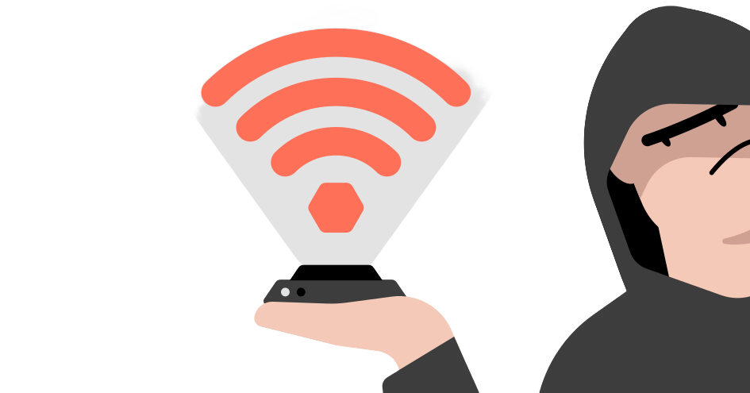
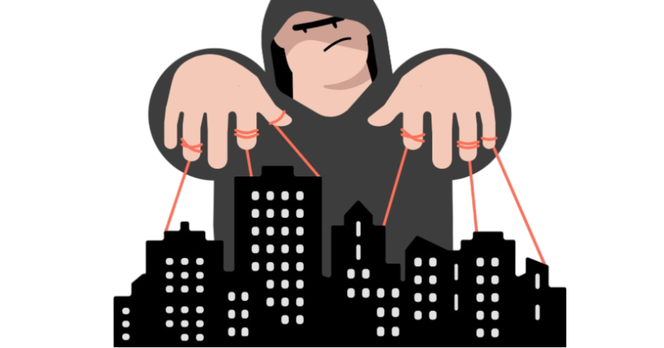
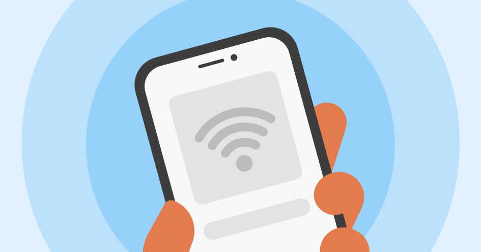

1. Reconnaissance
Hackers typically look for busy locations like airports, coffee shops, hotels.
Hackers typically look for busy locations like airports, coffee shops, hotels.
These locations typically have multiple access points with the same name, making the hacker's fraudulent network difficult to notice.

The hacker then takes note of the legitimate network's Service Set Identifier (SSID) and sets up a new account with the same SSID.
They then broadcast the fake SSID using easily accessible devices like

But what about the captive login page where you sign in with your social accounts?
Hackers forge those too and skillfully to the extent that it is indistinguishable from the authentic one. And your browser doesn't gives any warning either.


The user was connected to the authentic network but they encountered a signal dropout. Strategically placed rogue AP that emit stronger signal is picked up by devices in proximity.
The user's device, set to automatically connect to familiar networks, unassumingly connects to the rogue AP since it recognizes the network name and previously stored credentials.
Set a password to keep your access point private.

This feature automatically connect to any networks that you have used before once you're in range. This can be dangerous in public places.
Multi-factor authentication is when two or more steps are required to log into a system. You may combine a password requirement with a code sent to your mobile phone that you need to enter to proceed.

When using a public network, make sure you only visit HTTPS websites, as opposed to HTTP. (The ‘s’ stands for secure.) An HTTPS website will have end-to-end encryption, which prevents hackers from seeing what you are doing.